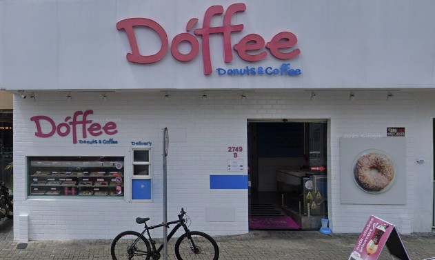
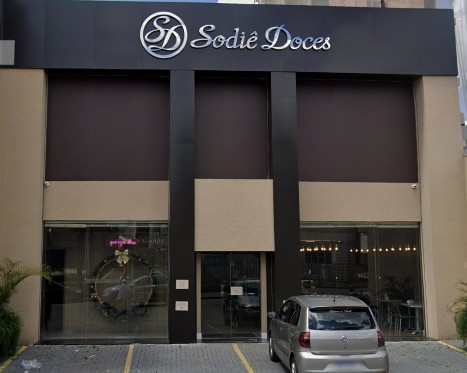

|
 Dóffee Donuts & CoffeeA Doffe é uma ótima cafeteria para quem quer um encontrotranquilo e especial. Com um ambiente aconchegante e acolhedor, é o lugar perfeito para conversar, tomar um bom café e até trocar livros, tornando o momento ainda mais interessante para quem gosta de leitura. |
 Sodiê DocesA Sodiê Doces é uma ótima opção para quemquer marcar um encontro em um lugar doce e agradável. A cafeteria oferece um ambiente confortável, perfeito para conversar enquanto se experimenta seus famosos bolos e sobremesas. |

Padaria Tere NogueiraA Tere Nogueira é uma ótima opção para quem quermarcar um encontro em um lugar agradável e sabor. Com um ambiente acolhedor e sofisticado, a cafeteria é perfeita para conversar com calma enquanto se aprecia um café acompanhado de deliciosos doces e sobremesas. É um espaço ideal para relaxar, aproveitar a companhia e tornar o momento ainda mais especial. |

Anjo's PãesA Anjo’s Pães é uma padaria e cafeteria perfeita paraum encontro simples e aconchegante.Com um ambiente agradável e cheiro de pão fresco, é um ótimo lugar para conversar, tomar um café e aproveitar pães, salgados e doces deliciosos. O espaço é ideal para momentos tranquilos e boas conversas. |